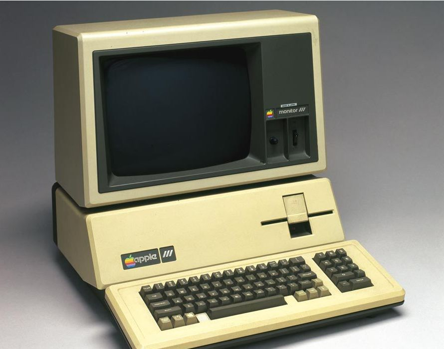

The idea of adding sensors and intelligence to basic objects was discussed throughout the 1980s and 1990s (and there are arguably some much earlier ancestors), but apart from some early projects -- including an internet-connected vending machine -- progress was slow simply because the technology wasn't ready.
Chips were too big and bulky and there was no way for objects to communicate effectively. Processors that were cheap and power-frugal enough to be all but disposable were needed before it finally became cost-effective to connect up billions of devices. The adoption of RFID tags -- low-power chips that can communicate wirelessly -- solved some of this issue, along with the increasing availability of broadband internet and cellular and wireless networking. The adoption of IPv6 -- which, among other things, should provide enough IP addresses for every device the world (or indeed this galaxy) is ever likely to need -- was also a necessary step for the IoT to scale. Kevin Ashton coined the phrase 'Internet of Things' in 1999, although it took at least another decade for the technology to catch up with the vision.